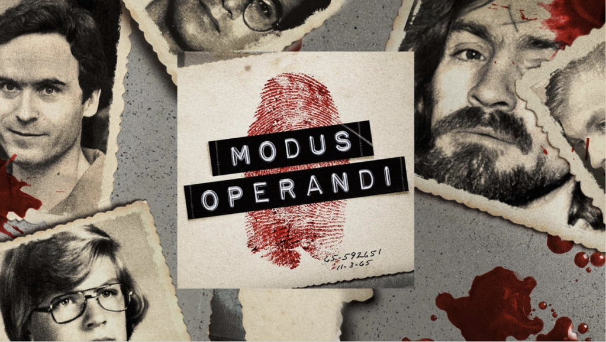
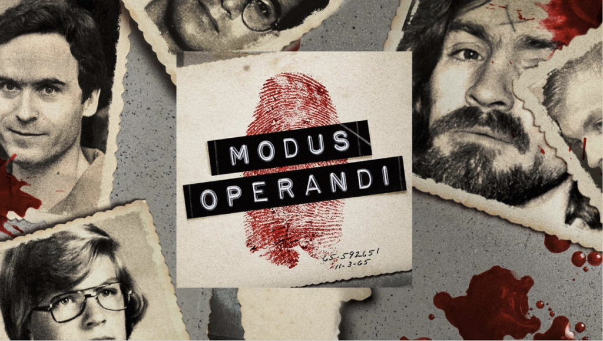

O Modus Operandi é um podcast sobre crimes reais.
O Modus Operandi é um podcast sobre crimes reais. Apresentado por Carol Moreira e Mabê Bonafé, esse projeto nasceu em janeiro de 2020. O podcast sempre busca contar as histórias de uma maneira sensível, trazendo os contextos envolvidos e propondo debates e reflexões. Você pode ouvir o podcast em seu agregador favorito, basta pesquisar Modus Operandi.
 
